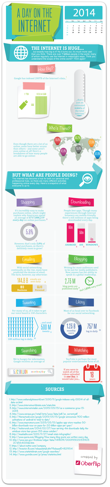

Webvisualisatie
Overige Visualisaties
De visualisaties die tot nu toe beschreven zijn, gebruiken elk een technische vorm van webdata, namelijk traceroute en acces logs. Om een visualisatie te maken van het web, is het ook mogelijk om ietwat informelere data te gebruiken. De site http://tweetping.net/ gebruikt bijvoorbeeld tweets om een visualisatie te maken. Op de site is in real time te zien waar op de wereld en wanneer iemand een tweet heeft gemaakt. Tweetping gebruikt ‘Lightstream technology’, wat gemaakt is met idee om op de makkelijkste manier in real time activiteit op social media te volgen.
Hieronder is de visualisatie van Tweetping te zien:
Ververs de pagina als u geen flits ziet bij elke tweet.
Een site als http://onesecond.designly.com/ gebruikt niet alleen tweets, maar ook youtube filmpjes, facebook posts, reddit posts, instagram foto’s, skype calls, dropbox bestandjes, google zoekopdrachten en tot slot mails om een idee te geven van wat er elke seconde op het internet gebeurt. 'One Second on the Internet' geeft een helder beeld van hoeveel er wel niet binnen een seconde gebeurt op het internet en is dus op zijn eigen manier een visualisatie van het internet.
Hieronder is de visualisatie van One Second on the Internet te zien:
Zelfs de site http://www.emojitracker.com/ valt binnen de categorie van webvisualisaties. Deze site laat in real time zien hoeveel emojis er gebruikt worden in tweets. Deze site is een goed voorbeeld van het feit dat een visualisatie van het web eigenlijk heel simpel kan zijn.
Infographics
Een mooie manier om begrip te krijgen van het web is door middel van infographics. Een infographic geeft informatie door tekst met beeld te combineren. Veel voorkomende vormen van infographics zijn kaarten, grafieken, borden, tekeningen of interactieve applicaties. Het primaire doel van een infographic is het overdragen van informatie en kennis. Infographics worden al een lange tijd gebruikt om op een overzichtelijke manier kennis over te brengen. In het hedendaagse leven kom je infographics overal tegen, van de kaart in de bushalte, tot het verboden-te-eten bordje in de collegezaal.
Een voorbeeld van een klassieke infographic zie je hier:
Een ander voorbeeld van een infographic is een grafiek, want een grafiek laat ook door middel van een afbeelding, onoverzichtelijke data zien.
[INSERT FLOT GRAFIEK HIER]